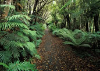
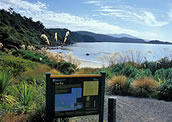

Stewart Island
Also known as Rakiura, "Place of Glowing skies" by the Maoris, Stewart Island is New Zealand's third largest island and newest National Park. Despite it's isolation, the Island is an awe-inspiring place to visit and is widely regarded as a hiker's paradise.
Situated approximately 30 kilometres south of the South Island, Stewart Island is unspoilt, wild and subject to some pretty inhospitable weather at times. Because of it's cold isolation and mostly dense, forest covered landscape, the island provides a haven for beautiful rare birds. These include the Tui, Parakeet, Kaka, Bell bird, Robin, Dotterel, Fern bird and the Stewart Island Brown Kiwi.
Stewart Island boasts a miniscule population of just over 600 people, making it one of most sparsely populated islands in the world. Most of the population lies in the eastern settlement of Oban. A visit to Stewart Island is an opportunity to sample the wonders of nature and to get away from it all.
Getting to Stewart Island
Stewart Island Experience offer ferry boat trips between Bluff
and Stewart Island that take about 1 hour. They also offer Queenstown & Invercargill to Bluff coach transfers. Flights to Stewart Island are also available.